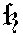
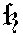
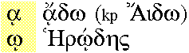
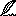

Angle: software
Ruse: программное обеспечение,
софтвер
1996-02-29
Angle: single-assignment (language, variable)
Ruse:
(язык, переменная) с однократным
присвоением
1999-02-20
Dosiero, entenanta sonajn datumojn, eligeblajn per komputilo, precipe kiel parto de plurmedio. Kutimaj finaĵoj de sondosieroj estas .au .snd .ra .ram.
En la Interreto oni povas trovi sondosierojn de la Pola Radio en Esperanto; vd http://www.wrn.org/stations/poland.html. Por aŭskulti tiujn sondosierojn necesas sonkarto en via komputilo kaj la sonlegilo Real Audio.
Angle: sound file, audio file
1997-11-27
Kromkarto kiu, stirate de programo, generas elektronikajn signalojn por eligi sintezatajn sonojn per laŭtparolilo. Kutima peco de aparataro por plurmedio. Ekz-e Sound Blaster.
Angle: sound card
Ruse:
звукогенератор
1997-11-27
Aplikaĵo ebliganta aŭdigi sondosieron. Ekz-e la ĉiesaĵo Real Audio, elŝutebla de http://www.realaudio.com/help.html.
Angle: sound player
France: lecteur audio
1997-11-27
 Ĉiu el la du interdualaj aksiomoj (vd dualeco) de Bulea algebro:
Ĉiu el la du interdualaj aksiomoj (vd dualeco) de Bulea algebro:
(x + y) ⋅ y = y
(x ⋅ y) + y = y
Pli speciale: vero∨x=vero, malvero∧x=malvero.
Angle: absorption law
Ruse: закон поглощения
1996-02-29
Duloka operacio laŭ kies algoritma difino
oni rajtas (kaj eĉ devas) ne plenumi la komputadon de la dua argumento, se
la valoro de la unua estas sorbanta. En C la Buleaj operacioj && kaj
|| estas resp. sorbema kajo kaj sorbema aŭo.
La sorbemaj operacioj ŝajnas pli rendimentaj; krome, ili ebligas tiel
kombini la operandojn, ke la unua estas kondiĉo por la komputeblo de la dua, ekz-e en
DUM (r≠NUL) KAJ (r↑.ŝlo≠NUL) FARU …
vero en la unua argumento indikas maleston de la serĉataĵo en la listo (kio probable postulas kreadon de nova listano), kaj vero en la dua necesigas daŭrigon de la serĉo. Kp laŭbita operacio.
Angle: logical operator, short-cut operator
1996-02-29
 La germana
litero ß, kies fonetika valoro estas
[s], estiĝinta kiel ligaturo de gotikaj S+Z:  (kp zoeto). En la Latina-3a kaj Unikodo
ĝi havas la kodonon 223=16uDF.
La germana
litero ß, kies fonetika valoro estas
[s], estiĝinta kiel ligaturo de gotikaj S+Z:  (kp zoeto). En la Latina-3a kaj Unikodo
ĝi havas la kodonon 223=16uDF.
Ĉe majuskligo oni iam lasas sozon minuskla (kvankam en multaj tiparoj sozo estas pli alta ol la ĉefliteroj), aŭ anstataŭigas ĝin per SS, krom se estiĝas kolizio kun ss-vorto (ekz-e MAßE — MASSE — MASZE).
Angle: sharp S, German double S
Germane: Eszett, scharfes S, Ringel-S
1996-10-18
Klavo, kutime iom longa, kiu servas por enigi spaceton.
Angle: space bar
Ruse:
клавиша пробела
1996-02-29
Signo kies bildigo sur ekrano aŭ papero estas vaka signopozicio; ĝia Askia kodono estas 32. Ĉe linifaldo spaceto povas bildiĝi per linifino (tiukaze spaceto rolas kiel stirsigno). Kp fikslonga spaceto, nerompebla spaceto, blankaĵo, tabo.
Rim. En programlingvaj difinoj pri la uzado de spacetoj oni iam bezonas vidigi ĝiajn aperojn; tiam oni simboligas ĝin per kuvo ␣ aŭ ␢.
Angle: space, space character, blank
Pole: spacja
Ruse: пробел
1996-02-29
Angle: space
France: espace, place
Germane: Raum
Ruse: пространство,
место
(Mallaŭde:) Programado kun kompleksa kaj konfuza stirstrukturo, ekz-e uzanta multajn saltojn, esceptojn ktp, sen klara disdivido en sendepende kompreneblajn partojn. Malo de strukturema programado.
Angle: spaghetti programming, spaghetti code
1996-02-29
 Amase sendi nepetitan mesaĝon per retpoŝto, aŭ disafiŝi ion en pluraj forumoj (Interreta ĵargonvorto).
Amase sendi nepetitan mesaĝon per retpoŝto, aŭ disafiŝi ion en pluraj forumoj (Interreta ĵargonvorto).

Noto. La vorto estas efektive uzata en la reto, kvankam ŝajnas, ke pli simplaj «trudi, trudletero, trudaĵo, trudanto» estus tute sufiĉaj kaj probable pli klaraj.
Angle: spam
1997-12-15
Ω En Unikso, logika dosiero realiganta interfacon kun disponaĵo. Por ĉiu disponaĵo konektita al komputilo la operaciumo tenas almenaŭ unu tian dosieron. La specialaj dosieroj kutime troviĝas en la dosierujo /dev. Oni distingas specialajn dosierojn bajtajn kaj specialajn dosierojn blokajn.
Angle: special file, special device file
France: fichier spécial
Germane: Spezialdatei, Sonderdatei
Ruse:
специальный файл устройства
1999-04-06
Ω En Unikso, speciala dosiero uzata por senbufra eneligo. Grava ekzemplo estas terminalo.
Angle: character device file
Ruse: байтовый файл устройства
1999-04-06
Ω En Unikso, speciala dosiero uzata por eneligo per fikslongaj datumblokoj. Kontraste al speciala dosiero bajta, ĝi ebligas atingi la disponaĵon sen zorgi pri ties aparataj apartaĵoj.
Angle: block device file, block special file
Ruse: блочный файл устройства
1999-04-06
En la programlingvoj, videbla signo, kiu estas nek litero, nek cifero, nek spaceto; ekz-e la interpunkciaj signoj, operacisimboloj. En Paskalo
speciala_simbolo = "+"|"-"|"*"|"/"|"="|"≠"|"<"|"≤"|"≥"|">"
|"("|")"|"["|"]"|":="|"."|":"|";"|"↑"| vortosimbolo. Pli ĝenerale, vd apartan tabelon (Specialaj signoj).
Angle:
special character
Ruse: специальная литера
1996-02-29
Deklarema lingvo por prezenti programspecifojn.
Angle: specification language
Ruse:
язык спецификация
1996-02-29
Noto. Laŭ PIV1,
specif·i [Z] tr Nome esprimi; detale difini; precize mencii: specifi la reciprokajn rajtojn en kontrakto; la leĝo ne povas specifi ĉiujn specojn de delikto; li specifis, ke la konstruaĵo estu el ŝtonoj kvadrataj (…)
Specifo ¤ Priskribo de la ecoj postulata por certa liverado
Angle: specification
Ruse: спецификация
1996-02-29
Retnodo disponiganta kopion de (iuj) dosieroj el alia retnodo por plirapidigi la komunikadon en la ĉirkaŭo de la spegulo aŭ por iom malpliigi la ŝarĝon de la originalhava servilo. Kp replikado.
Angle: mirror
France: serveur miroir
1999-03-11
Ω La plej supra nivelo en hierarkia
komputila reto. Sakretoj kaj transitaj retoj, konektitaj al spino,
komunikiĝas.
Angle: backbone
France: dorsale, réseau principale
Hispane: comunicación central
Ruse: базовая
сеть
1996-02-29
Super intervalo [a,b], tia funkcio, ke ĉe iu disdivido
a=x₀<x₁<…<xn=b ĝi prezenteblas super ĉiu
el la intervaloj (xk,xk+1) per polinomo. Ofte necesas, ke splajno estu kontinua
je la punktoj { xi }, 0<i<n. Splajnojn
oni uzas ekz-e por prezenti tiparojn.
Angle: spline
Pole: splajn
Ruse: сплайн
1996-02-29
1996-10-15
Malregule estiĝanta eraro, ekz-e unuopa misfunkcio de aparataro aŭ eraro de operatoro. Kp persista eraro.
Angle: soft error
Ruse: нерегулярная ошибка
1996-02-29
Registri (sur papero aŭ ekrano) plenumatajn komandojn kajaŭ ŝanĝatajn variablojn kajaŭ aliajn okazaĵojn, interesantajn la uzulon (ekz-e atingon de certaj kontrolpunktoj).
Angle: trace
1996-02-29
(a⇒b) ∧ (b⇒a)
Angle: iff
France: ssi
Ruse: ттогда
1996-02-29
Angle: station, server
Ruse: сервер, станция
1996-02-29
Loka reto (ringforma) en kiu por solvi
konfliktojn ĉe transmeto de mesaĝoj estas uzataj ĵetonoj
(sendopermesiloj). Stacio tenas la ĵetonon dum ĝi transmetas mesaĝon (se
ĝi havas transmetendan mesaĝon), kaj poste transdonas la ĵetonon al la
sekva stacio. Kp eterreto.
Angle:
token ring
France: anneau à jeton
Ruse: эстафетное
кольцо
1999-12-11
Aŭtomato kun staka memorrubando (do, havanta la komencon unuflanke, sed senfina en la mala direkto).
Angle: push-down automaton
Ruse:
магазинный автомат
1996-02-29
Provo legi el jam malplena stako. Kp troo, staktroo.
Angle: stack underflow
France: dépassement inférieur (négatif) de pile
Germane: Stackunterlauf
Ruse: исчерпание
стэка, выход за нижнюю границу стэка
1998-08-02
Inversvica memoro, kaj speciale la maniero realigi ĝin per vektoro kun nombrilo indikanta la plej ĵuse aldonitan elementon (indico de la pinto en nia ekzempla Paskala realigo Vektora stako).
En aparata realigo de tia vektora stako la pintindico estas procesora reĝistro.
Angle: stack
France: pile
Germane: Stapelspeicher, Kellerspeicher, Stack
Ruse:
магазин, стек, стэк
1996-02-29
Provo skribi sur jam plenan stakon, kies memoro jam estas elĉerpita. Kp troo, stakmaltroo.
Angle: stack overflow
Ruse: переполнение стэка
1998-08-02
Fondinto de GNU-projekto kaj prezidanto de FSF. Hejmpaĝo: http://www.gnu.org/people/rms.html.
1998-06-29
Ω Reĝimo de perkomputila datumtraktado (aŭ programplenumo), ĉe kiu la elementoj de staplo estas traktataj (resp. plenumataj) unu post la aliaj sen interveno de la manipulisto, kaj la rezultoj estas eligataj en dosieron aŭ sur la paperon. Kontraste al tio, en dialogo la uzanto povas enigi komandojn dum la programplenumo.
Rim. Do, «stapla reĝimo» estas arkaika speco de fona reĝimo.
Angle: batch mode,
batch processing
France: traitement par lots
Germane: Stapelbetrieb
Ruse: пакетный
режим
1999-09-20
Ω Kolekto da programoj (kaj eventuale datumoj) preparitaj sur disko (aŭ, historie, magneta rubando aŭ staplo da trukartoj) por enigo kaj plenumo en stapla reĝimo.
Angle: batch
Ruse: пакет
1999-09-20
Angle: boot, booting, bootstrap, startup
France: amorce, démarrage
Ruse: запуск,
загрузка
1996-02-29
Eco de programo konstatebla sen ties plenumo (kontraste al rultempa).
Angle: static
Ruse: статический
1996-02-29
La maniero bindi sendepende kaj antaŭ plenumo de la programo. Kp dinamike bindebla biblioteko.
Angle: early binding, static binding
Ruse:
статическое связывание
1998-07-07
Maniero disponigi ĉefmemoron solfoje por la tuta rultempo de programo, do, antaŭ la plenumo, «statike». Kp dinamika memordisponigo.
Angle: static allocation
Ruse: статическое
размещение
1998-08-13
La suma alto de prestipo, tiu de la trunko plus tiu de la kapo; alivorte, distanco inter la piedo kaj signobildo.
Angle: type height,
height to paper
France: hauteur en papier
Ruse: рост литеры
1996-11-05
« Signo
(*), uzata por atentigi pri piedpaĝa noto, aŭ post vorto, por marki, ke ĝi
ne ekzistas en la lingvo. Vd asterisko»
[PIV1].
Fakte, en la leksikografio de Esperanto la steleto plej ofte indikas fundamentecon!
En Askio steleton prezentas la kodono 42. En multaj programlingvoj steleto simbolas multiplikon; en la teorio pri formalaj lingvoj, metite post la simbolo de signaro (ekz-e S*), ĝi indikas la aron de ĉiuj vortoj en la alfabeto S (la kroĉfermon).
En genealogiaj kaj kronologiaj tabeloj steleto enkondukas naskiĝodaton.
Vd ankaŭ referencilo.
Angle: asterisk, star
Pole: gwiazdka
Ruse: звёздочка,
астериск
1996-09-19
Dialoga datumtraktilo en formo de tabelo, kies ĉiu ano, nomata ĉelo, povas enteni nombron, signoĉenon aŭ formulon, esprimantan la valoron de la koncerna ĉelo kiel funkcion de aliaj ĉeloj.
Ekz-e se la vertikaloj estas numeritaj per la literoj A, B, C … kaj la horizontaloj, per la ciferoj 1, 2, 3, …, tiam la ĉelo B5 povus enhavi esprimon A2+B3-99, kio difinas la valoron B6 = A2+B3-99.
La uzulo povas ekzameni, enigi aŭ ŝanĝi la valoron de ĉelo. Tiaj ŝanĝoj rezultigas valorŝanĝojn en la dependaj ĉeloj, kio tuj bildiĝas sur la ekrano. Krome, la uzulo povas indiki la bezonatan aranĝon de la tabelo, komandi serĉon aŭ ordigon.
Noto. Do, oni povas diri, ke ĉiu ŝanĝo tuj propagiĝas tra la tuta tabelo. Bedaŭrinde, la vorto «propaga» estus konfuziva (pro+paga), tial ni preferas la vorton sterna, kiu krome estas oficiala kaj laŭforme pli proksima al la angla termino.
Angle: spreadsheet
France: tableau électronique
Germane: Kalkulationstabelle
Ruse:
электронная таблица
Suome: taulukkolaskin
1996-06-22
Aro da reguloj por ekstera prezento de
teksto, ekz-e kian deŝovon havu koncerna
speco de alineoj, per kia tiparo estu prezentitaj titoloj, matematika aŭ
programlingva tekstopeco, enhavtabelo ktp.
Stilfolio povas esti aparta dosiero (uzebla kun pluraj dokumentoj) aŭ speciala sekcio de dokumento kies eksteran prezenton ĝi priskribas. Stilfolioj ebligas facile kaj fidinde variigi eksteran prezenton, formon de dokumento sen ŝanĝi ĝian esencan, «enhavan» parton.
Estas pluraj normoj por stilfolioj por HTML-aj hipertekstoj; la plej disvastiĝinta estas CSS1 (ankaŭ http://www.w3.org/Style/css/).
La forumo pri stilfolioj: comp.infosystems.www.authoring.stylesheets; ties respondaro: http://home2.swipnet.se/%7Ew-20547/faqs/ciwas-mFAQ.html. Limigoj de la Navigilo: http://developer.netscape.com/support/bugs/known/css.html.
Angle: style sheet, template
Pole: arkusz stylów
Ruse: таблица
стилей, шаблон
1998-02-01
Bito kiu determinas la traktadon de la resto de la datumano.
Noto. Kp stirsigno, kontrola bito.
Angle: control bit
France: bit de commande
Germane: Steuerbit
Ruse: управляющий
разряд, служебный разряд
1996-02-29
Prezento de programo (aŭ algoritmo) per direkta grafeo kies verticoj respondas al ordonoj kaj kondiĉoj de la programo; eĝo iras el vertico A al vertico B SSE ĉe iu programrulo la ordono B estas tuja postanto de A. Kp datumflua diagramo.
Angle:
control flow diagram, flow chart
Ruse: блок-схема;
граф управления
1996-02-29
Speco de pikilo, rulebla globo iom malmergiĝanta el la ebena surfaco de aparato (ekz-e de la klavaro). Rulante la globon, la uzulo movas la kursoron. Alivorte, renversita muso muntita en la ujon de pli granda komputila organo.
Angle: track ball, rolling ball
France: boule de commande
Germane: Rollkugel
Ruse: шаровой
манипулятор
1996-02-29
Direkti movojn laŭ programo, elekti plenumotajn komandojn; stirado estas tia moviĝo, la kuranta stato de la stirorgano, la programloko plenumata en koncerna momento. Kp administrado.
Noto. «tr  Direkti veturilon (boaton, biciklon,
aŭton, aviadilon ktp)…» [PIV1].
Direkti veturilon (boaton, biciklon,
aŭton, aviadilon ktp)…» [PIV1].
Angle: control
Ruse:
управлять
1996-02-29
Programlingva esprimilo indikanta la ordon en kiu la frazoj estu plenumataj; ekz-e iteracio, seo.
Angle: control structure
France: structure de commande
Germane: Steuerstruktur
Ruse: управляющая
конструкция
1996-09-22
En ŝela lingvo, operacio uzata por stiri laborojn. Ekz-e en Baŝo stiroperaciojn simbolas linifino kaj "||" "&&" "&" ";" ";;" "|" "(" ")".
Angle: connector, control operator
Germane: Verbindungszeichen
Ruse: связка
1998-08-13
Stira organo de aparato; speciale en komputilo: ĉeforgano.
Angle:
control unit
France: unité centrale
Germane: Steuerwerk
Ruse: устройство
управления, УУ, блок команд
1996-02-29
En GUI, panelo uzata por agordi «reĝimajn parametrojn», kiuj determinas funkciadon de la ekrano, klavaro kaj aliaj periferiaĵoj.
Angle: control panel
Pole: panel sterowania
Ruse: панель
управления
1996-02-29
Signo uzata por stiri eneligon aŭ datumtransmeton (kaŭzanta ekigon, reĝimŝanĝon, haltigon); ekz-e stirsigno de Askio (La stirsignoj de Askio).
Angle: control character
France: caractère de commande
Germane: Steuerzeichen
Pole: znak sterujący
Ruse: управляющая
литера
1996-02-29
Pikilo, aparato destinita por enigi koordinatojn (precipe en komputilaj ludoj) havanta la formon de oblikvigebla stangeto.
Angle: joystick
France: manche à balai
Germane: Steuerhebel
Ruse: джойстик,
координатная ручка, рычажный указатель
1996-02-29
Ĝenerala aranĝo de la stirkonstruaĵoj; ekz-e spageta programado.
Angle: control structure
France: structure de commande
Germane: Steuerstruktur
Ruse: структура
управления
1996-09-22
«Variablo, kiu havas akumulan
probablodistribuon» [PIV1].
Alivorte, ajna elemento de nombrosekvenco { xk }, b≤xk≤a, tia ke la distribuo de tiuj xk, ke bi≤xn−i<ai por ĉiuj i=1,…,m estas la sama koncerna distribuo por ajna elekto de m, m≥0, kaj bi … bm, ai …, am. Kp kvazaŭstokasto.
Angle:
random variable
Ruse: случайная величина
1996-02-29
Noto. Pro tiu dusenceco la termino «stori» estas evitinda.
1996-02-29
1996-02-29
Ĝenerala determinado de subceloj kies atingo necesas por atingi la ĉefan celon. Kp disciplino.
Angle: strategy
Ruse: стратегия
1996-02-29
«Skriba kaj tipografia signo (-), uzata por
dividi la elementojn de aparte longa aŭ nekutima kunmetita vorto, por
transporti parton de vorto sur la sekvantan linion, aŭ por kelkaj aliaj
celoj» [PIV1]: ili devus havi antaŭ si apostrofon aŭ streketon (-)
[Z]. En Askio streketon prezentas la kodono 45. Vd eventuala streketo.
Rim. Ni malpreferas la PIVan «dividstreko»n (kp vortodivido), ĉar ĝi estas konfuziva: tiu vorto estus natura nomo por la oblikva on-streko (ekz-e en x/y). Pluraj vortaroj nacilingvaj retenas la Zamenhofan (kaj i.a., la rusan) «streketo»n, ekz-e [Kra83]. — Por la simboloj kiel a′, a″ PIV1 indikas du legmanierojn: a streko, a duobla streko — aŭ a streketo, a duobla streketo. Evidente, por nia vortuzo preferindas la unua (oni ankaŭ povus diri «minutsigno» pri la aparte uzita dekstra korno, kaj «sekundosigno» pri la duobla streko).
Kp substreko, superstreko, trastreko.
Angle: hyphen
France: trait-d'union
Ruse: дефис,
чёрточка
1996-04-07
Markaĵo en kiu kodata informo estas prezentata per sekvenco da paralelaj strekoj diverslarĝaj.
Angle: bar code
Germane: Strichkode
Ruse: штрих-код
1996-02-29
En Paskalo, ordono (vd) kunmetita el ordonoj (kp simpla ordono).
Angle: structured statement
Ruse: сложный
оператор
1996-02-29
Programado sekvanta kelkajn principojn derivitajn el la ideo, ke logikeco kaj kompreneblo de programo garantias ĝian fidindon, faciligas modifadon kaj rapidigas la programverkadon. La karakteraj trajtoj de strukturema programado estas la uzado de altnivelaj esprimiloj (kaj speciale evitado de nestrukturaj saltoj), disciplinema kaj minimuma uzado de mallokaj variabloj, modulemo kun speciala akcento sur la metodoj de la desupra konstruado. Kp spageta programado.
Angle: structured programming
Ruse:
структурное программирование
1996-02-29
Malpliigi la longon de ĉeno per forĵeto de ĉeneroj laŭ ia regulo. Ekz-e, en bitĉeno prezentanta reelon, forigi la bitojn kies pezo malsuperas fiksitan sojlon (kp rondigo; la Paskala prafunkcio trunko); aŭ ĉe eligo, printi nur fiksitan nombron da ciferoj; aŭ forigi la vostajn spacetojn el signoĉeno.
Angle: truncate
Ruse: усечь
1996-02-29
Simbolo de anstataŭaĵo; de la komandoj subtraho, aboni.
1996-02-29
Indico presita sube de la linio; simile pri aliaj esprimoj en tiu pozicio, ekz-e 2 en H₂O.
Angle: subscript
France: indice
Ruse: нижний индекс
1996-08-23
Paĝotitolo situanta sub la teksto de la paĝo.
Angle: footer
Ruse: нижний колонтитул
1996-02-29
Por aro A, subararo estas la aro de ĉiuj ĝiaj
subaroj, simbole
2A = { x : x⊆A }. Ekz-e
2∅ = { ∅ }
2{ 1 } = { ∅, { 1 } }
2{ 1, 2 } = { ∅, { 1 }, { 2 }, { 1, 2 } }
Rim. Tiun simbolaron inspiris la fakto, ke la kardinala nombro de la subararo de finia A estas 2|A|.
Angle: power set
France: ensemble des parties
Germane: Potenzmenge
Ruse: множество всех
поднможеств, множество-степень, булеан
1996-02-29
Vd arbo.
Angle: subtree
Ruse:
поддерево
1996-02-29
Aro A
estas subaro de aro B, se ĉiu elemento de A anas en
B; simbole A⊆B aŭ, se A≠B, A⊂B
(oni voĉlegu: «a partas en bo»); en Paskalo resp. A≤B kaj
A<B. Kp membrorilato, superaro.
Angle: subset
Germane: Teilmenge
Ruse: подмножество
1996-02-29
Koneksa subsekvenco ai ai+1 … aj de ĉeno a₁ a₂ … an (1≤i≤j≤n).
Angle:
substring
Ruse: подстрока, подцепочка
1996-02-29
Ĉiu el la membroj de dispartigita disko (precipe fiksita disko), ĉiu kun sia aparta dosiersistemo.
Angle: partition,
disk slice
Ruse: раздел
1998-06-19
Dosierujo kiu mem estas elemento de alia dosierujo.
Angle: subdirectory
Ruse:
поддиректория
1996-02-29
Parto de grafeo
G, estiĝinta per forigo el G de eĝoj kajaŭ de verticoj
kun la eĝoj incidaj al tiuj verticoj.
Angle: subgraph
Ruse: подграф
1996-02-29
Neradika, malsupera indekso ĉe indeksa atingo aŭ indeksvica atingo. Kp superindekso, kromindekso.
Angle: secondary index, fine index
1996-02-29
Greka
diakritilo (Unikode 16u3F5), litero joto skribita sub vokala etlitero (pro etimologio); ĉe ĉefliterigo de la
diakritaĵo subjoto releviĝas sur la linion.
 Subjoto aspektas tre simile al vosteto, tamen estas skribata centre sub sia litero. Kp zoeto.
Angle: greek
non-spacing iota below
Latine: jota subscriptum
Ruse: подписная
йота
1996-11-03
Komo-forma
diakrita signo en kelkaj lingvoj (latva, rumana), skribata sub la literoj G,
k, n, s, t (vd ); ofte (ankaŭ en internaciaj normoj)
konfuzata kun zoeto. Kp subjoto, superkomo, vosteto.
Angle: comma accent
1996-02-29
La
parto de signobildo de iuj minuskloj (ekz-e de g, j, p) situanta
sub la baza linio. Kp superliniaĵo.
Angle: descender
France: jambage
Ruse: подстрочный
элемент литеры
1999-02-20
Parto de programo, nomhava sekvenco da frazoj referencebla (vokebla) el diversaj partoj de la ĝin entenanta programo kajaŭ el aliaj programoj. Subprogramo estas superorda nocio por proceduro, makroodifino, modulo, kunprogramo; en iuj lingvoj oni trovas ankaŭ aliajn specojn de subprogramo: taskoj, pakaĵoj (vd Ada) ktp.
Noto. Multaj aŭtoroj limigas la signifon de subprogramo al tiu de proceduro.
Angle: routine
Ruse: подпрограмма, программная
компонента
1996-02-29
Parto de komputila reto, ofte fizike apartigita,
kies adresoj havas komunan parton (la subretadreson). Subreto rilatas al reto
kiel la reto rilatas interreto.
Angle: subnet
1997-06-29
Tia parto
{ an₁, an₂ … ank, … }
de sekvenco { an }, ke la ordo de la sekvencanoj estas respektata: nk<nk+1 por ĉiuj k. Kp subĉeno.
Angle: subsequence
Ruse:
подпоследовательность
1996-02-29
Maniero emfazi, uzata i.a. por apartigi la ŝlosilvortojn en «tajpostila» programprezento.
Angle: underline, underscore
Ruse:
подчеркнуть
1996-02-29
Angle: underscore character
Pole: podkreślenie
Ruse: подчерк
1996-02-29
Por simpligi la strukturon de la aritmetikilo, en komputiloj la subtraho kutime estas reduktata al adicio.
Noto. La formulon a−b oni voĉlegu «a minus bo»; a nomiĝas la malpliigato, b estas la subtrahato, la rezulto estas la diferenco.
Angle: subtraction
Ruse: вычитание
1996-02-29
En Paskalo, esprimo indikanta atingon de komponanto de variablo havanta malsimplan tipon; subvariablo mem ankaŭ estas variablo.
subvariablo = indichava_variablo | kampatingo.
Angle: component variable
Ruse: частичная
переменная, компонента
1996-02-29
Datumtipo en Paskalo, Ada, MODULA. Subvariejo estas parto (intervalo) de iu antaŭe difinita orda tipo, nomata ĝia baza tipo. La difino de subvariejo indikas du konstantojn de la baza tipo, la suban kaj la supran limojn de la subvariejo; la suba limo ne rajtas superi la supran. En Paskalo kaj MODULA la baza tipo devas esti diskreta (numerebla tipo), en Ada oni rajtas difini subvariejon de reela tipo. La Paskala sintakso:
subvariejo = konstanto ".." konstanto.
La operacioj super la valoroj de subvariejo plenumiĝas konforme al la reguloj de la baza tipo; tamen ilia rezulto devas kuŝi inter la limoj de la subvariejo.
Angle: subrange
Ruse: отрезок
1996-02-29
Dosiernoma finaĵo.
Rim. Kvankam la termino sufikso havas certan tradicion en la esperanta terminaro komutada, ĝi malbone akordiĝas kun la tradicia senco de la termino «sufikso» precipe en la kadro de Esperanto, kie la sufikso normale ne finas la vorton. Aliflanke, la termino «finaĵo» sencas per si mem, sendepende je la lingvosciencaj metaforoj, kiuj malmulte helpas aŭ eĉ malhelpas.
1996-02-29
Parto de aritmetikilo, cirkvitaro plenumanta adicion de pluraj operandoj. Konsiderante la funkciadon oni distingas paralelan sumilon, kiu traktas samtempe ĉiujn ciferpoziciojn, kaj serian sumilon, kiu adicias la ciferojn unu post alia. Konsiderante la cirkvitojn oni distingas kompletan sumilon kaj duonsumilon.
Noto. La vortaro [KKV] atribuas al «sumilo» la signifon de nia akumulejo.
Angle: adder
Ruse: сумматор
1996-02-29
Aro A
estas superaro de aro B, se ĉiu elemento de B anas en
A; en Paskalo A≥B kaj A>B. Kp subaro.
Angle: superset
Germane: Obermenge
Ruse: надмножество
1998-11-15
Dosierujo inter kies anoj estas alia(j) dosierujo(j).
Angle: superdirectory
Ruse:
наддиректория
1996-02-29
Rapida ekzameno (surekranigo) de la enhavo de dosiero sen la eblo ĝin redakti. Kp foliumilo.
Angle:
browsing, view
France: survol
Ruse: просмотр
1996-02-29
Grafeo A estas supergrafeo por grafeo
B, se B estas subgrafeo de
A.
Angle: supergraph
Ruse: надграф
1996-02-29
Radika indekso ĉe indeksa atingo aŭ indeksvica atingo.
Noto. Kp ĉefindekso.
Angle: gross index, main index, master index
1996-02-29
Komo-forma diakritilo en la latva lingvo, skribata super
la etlitero g, kaj ŝanĝiĝanta en subkomon ĉe la responda ĉeflitero; vd .
Angle: comma accent
1996-02-29
La parto de signobildo de iuj minuskloj (ekz-e de d, h, t) pli alta ol
ikso. Kp subliniaĵo.
Angle: ascender
France: hampe, jambage supérieur
Ruse:
надстрочный элемент литеры
1999-02-20
Ω En Unikso, la dosiernomo .. (du punktoj) indikanta la superdosierujon de la kuranta dosierujo. Kp mem.
Angle: dot-dot
Ruse: вверх, два-назад
2000-08-27
Diakritilo ˙, punkto super kelkaj literoj (C,
G, I, Z), uzata ekz-e en la lingvoj pola, turka, literoj Maltaj (ekz-e en la literoj ċ, ġ,
İ, ż). Kaj, malpli evidente, parto de la Latinaj i, j (kp la
francajn i, î, ï; niajn j, ĵ; en la turka skribo, i
ĉeflietre retenas la superpunkton: İ, kontraste al la sensuperpunkta
paro ı, I).
Angle: overdot, dot above
1996-02-29
En Paskalo, Ada k.a. programlingvoj, struktura ordono, oportuna por ope atingi kampojn de rikordo. Paskale:
superrikorda_ordono =
"SUPER" variablo{"," variablo} "FARU" ordono. La variablolisto de superrikorda ordono devas indiki rikordojn. Superrikorda ordono kalkulas la nomojn de la rikordoj kaj plenumas la ordonon. La ordono iĝas parto de la regiono de ĉiuj kamponomoj el la rikordoj, konstituantaj la rikordoliston, kaj sekve tiuj nomoj povas aperi en la ordono sen la bazo, normale postulata en kampatingo. Ekz-e la superrikorda ordono (uzanta deklarojn el Rikordoj en Paskalo)
SUPER jubileo FARU
SE monato = 12 TIAM STARTO
monato := 1;
jaro := sek(jaro)
FINO ALIE monato := sek(monato) ekvivalentas al pli longa programpeco:
SE jubileo.monato = 12 TIAM STARTO
jubileo.monato := 1;
jubileo.jaro := sek(jubileo.jaro)
FINO ALIE jubileo.monato:=sek(jubileo.monato) Do, superrikorda ordono mallongigas la programtekston; ĝi krome ebligas al la tradukilo generi pli bonan maŝinkodon.
Angle: WITH statement
Ruse: присоединяющий оператор
1996-02-29
Ringo kies subaro ankaŭ estas
ringo. Ekz-e la nombroj reelaj rilate al la entjeraj (kun la tradiciaj adicio kaj multipliko).
Angle: superring
Ruse: надкольцо
(2) super·ring·o, aŭreolo —
Ringoforma diakritilo (°) super kelkaj literoj (a, u —
å, ů…), uzata en la lingvoj ĉeĥa, dana, norvega, slovaka, sveda.
Rim. La Latina-1a konfuzas la superringon (Unikode 16u2da por la aparta superringo, kaj 16u30a por la kombinebla) kun la gradosigno (Unikode 16uB0).
Angle: overcircle,
ring above
Ruse: кружок сверху
1998-10-31
Simbolo de
pluraj operacioj, i.a. de nego, komplemento.
Angle: bar, overline; macron
Ruse: надчерк, верхняя черта
1996-02-29
Indico presita supre de la linio; simile pri aliaj
esprimoj en tiu pozicio, ekz-e la eksponento 2 en E=mc².
Angle: superscript
France: exposant
Ruse: верхний индекс
1996-08-23
Paĝotitolo situanta super la teksto de la
paĝo; ekz-e, en PIV1 ĝi konsistas el la kapvorto de la artikolo komenca
(por la maldekstraj paĝoj) aŭ fina (por la dekstraj).
Angle:
header, headline
Ruse: верхний колонтитул
1996-02-29
Kvitanco sendata kiel parto
de alia mesaĝo (ne kiel aparta mesaĝo).
Angle: piggyback
acknowledgement
Ruse: вложенное
подтверждение
1999-07-05
Ĵeto de aro
A al aro B, tia, ke ĉiu elemento de B estas bildo de ia a∈A.
Noto. Parolante pri surĵeto oni rajtas uzi la prepozicion sur: funkcio ĵetanta el aro A sur aron B. — Oni uzas samsence ankaŭ la terminon surjekcio.
Angle: surjection, onto
function
Ruse: сюръекция, отображение на
1996-02-29
Ω Konigi dosiersistemon en operaciuma medio, ebligante atingi ĝin.
Ekz-e Unikso identigas la dosiersistemon kun dosierujo per la komando mount (surmetu), kaj rompas la ligon per unmount (demetu).
Angle: mount
1998-03-06
Ω Dosierujo kien oni surmetas alian dosiersistemon.
Angle: mount point
1999-04-07
Esperantigita nomo de operacio por meti (registri) valoron sur stakon (vd Vektora stako) kaj implice alkrementi la stakpintan indicon. Kp elstakigu.
Angle: push
1996-02-29
Maniero produkti tipografiaĵojn per
integrigita traktado de la teksto, grafiko, bildoj, kun disponigo de diversaj
tiparaj familioj surbaze de komputila laborstacio aŭ persona komputilo stiranta altdistingivan
(laseran) printilon kaj eventuale, skanilon por ciferecigi bildojn. La redaktilo por surtabla tipografio (kompostilo)
inkludas specialan programaron por datumtraktado en tipografiaj terminoj
(priskribo de paĝo, tekstoaranĝo, surpaĝigo de tabeloj kaj figuroj ktp).
La sistemo de surtabla tipografio devas disponigi rimedojn por surekranigi la
kompostitan tekston antaŭ la printado (superflugo).
Angle: desktop publishing
France: microédition
Ruse: настольная
типография
1996-02-29
Aro A super kiu estas difinita karakteriza funkcio
e: A→[0.0,1.0]; ju pli granda estas e(x) por
x∈A, des pli veras, ke x apartenas al koncerna svaga aro.
Noto. «svag·a  Malpreciza, malbone difinita: svagaj konturoj; svaga nebulo; la svaga “oni”» [PIV1].
Angle:
fuzzy set
France: ensemble flou
Germane: unscharfe Menge
Ruse: размытое
множество
1996-02-29
Branĉo de logiko, teorio esploranta problemojn de komputila
prezento de homaj scioj kaj pensmanieroj,
precipe kadre de konsililo, sciobazo aŭ sistemo de artefarita intelekto. La tradicia
logiko ne konvenas por prezenti informojn, enkondukatajn per la vortoj
certagrade, iasence, tre ktp. Nu, anstataŭ la Buleajn valorojn vero kaj
malvero oni povas konsideri pli nuancriĉan
valorgamon, ekz-e prave, malprave, pravege, malpravege, pravete,
malpravete ktp; alivorte, oni povas konsideri la intervalon
[0.0..1.0], kaj esprimi ĉiun tian svaglogikan valoron per ties
elemento. Svaga logiko studas svagajn arojn,
svagajn predikatojn, oni povas difini svagajn rilatojn kaj svagajn kvantorojn.
Angle: fuzzy theory
Ruse: размытая логика
1996-02-29
Ĵargona vorto priskribanta misfunkcian staton de programo, kiam ĝi neniel reagas al la ordonoj de la uzanto. Kp halteti, pendi.
Angle: hang
Ruse: висеть, повиснуть
1999-09-12
Ekrana adaptilo havanta pli grandan distingivon ol VGA (800×600 aŭ 1024×768 rastrumeroj).
Noto. De la angla Super Video Graphics Adapter.
1996-10-12
{kind=link}